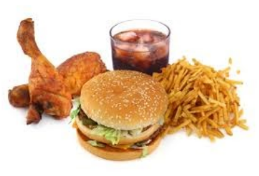

index<--
Moka Challenge

Challenge 1:
Translate: When is the time to eat?Dictionary:
- ut = when
- sonu = is
- tepa = time
- moku = to eat
Challenge 2:
Translate:- If one is hungry, he must eat something.
- There are people who suffer from hunger.
- si = if
- su = he
- ki = who
- una = one
- xaga = hunger
- dovu = must
- sh moku = to eat
- algo = something
- aka = there
- Xete = people
- Si un sonu hago, su dovu sh moku algo.
- Aka sonu Xete ki sofu de xaga.
Challenge 3:
Translate:- Which is your favorite food?
- My favorite food is omelette with cheese.
- uk = which
- fevo = favorite
- mia = my
- fevo = favorite
- moka = food
- omla = omelette
- de = from
- kesa = cheese
- Uk sonu toa moka fevo?
- Mia moka fevo sonu la omla de kesa.
Challenge 4:
Translate:- Do you like toast with butter?
- I don-t like it. I prefer to eat without bread.
- tsie = to you
- te paju = you like
- pana = bread
- fejo = fried
- ku = with
- buta = butter
- og = without
- tsie te paju la pana fejo ku buta?
- no lo paju; moa favu sh moku og pana.
Challenge 5:
Translate:- Do you like boiled eggs?
- Yes, I like to eat two boiled eggs with mustard for breakfast;
- te paju le ueve geko?
- xa, ym paju sh moku bie weve geko ku sefa po deja;
Read next: Index